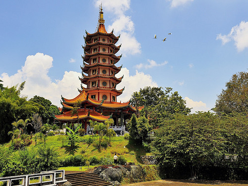
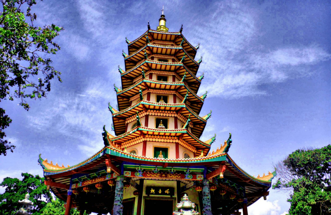

Vihara Watugong
Semarang - Kota Semarang memiliki objek wisata religi yang menarik. Salah satunya adalah Vihara Buddhagaya Watugong yang terletak di daerah perbukitan Semarang Selatan. Jika berangkat dari pusat Kota Semarang, wihara ini berjarak sekitar 45 menit di sepanjang jalan menuju Solo dan Yogyakarta.

Kompleks wihara berdiri di atas lahan seluas 2,25 hektare dengan lima bangunan utama. Diklaim bahwa ini merupakan wihara pertama dalam penyebaran agama Budha di Pulau Jawa, setelah kejatuhan Kerajaan Majapahit. Menurut Ketua Wihara, Halim Wijaya, ajaran Budha di Watugong dibawa biku asal Srilangka, Narada.
Pada 1934, Narada datang ke Indonesia membawa dua pohon bodhi (dalam agama Budha, pohon ini dipercaya sebagai tempat Sang Buddha Gautama bersemedi dan memperoleh pencerahan). Keduanya ditanam di kawasan Borobudur. Namun pada 1955, salah satu pohon dibawa dan ditanam di halaman Vihara Buddhagaya.

Dua bangunan yang mencolok di kawasan berbukit ini adalah Pagoda Avalokitesvara dan Wihara Dhammasala. Pagoda Avalokitesvara (Metta Karuna artinya kasih sayang) dengan tinggi 45 meter terlihat mencolok di antara bangunan di sekitarnya. Karena tingginya yang menjulang, pagoda yang diresmikan pada 2006 ini dinobatkan sebagai pagoda tertinggi di Indonesia oleh Museum Rekor Indonesia (MURI).
Pagoda dengan aksen warna merah dan kuning ini memiliki tujuh tingkat, yang bermakna seorang pertapa akan mencapai kesuciannya pada tingkat ketujuh. Bagian dalam pagoda berbentuk segi delapan dengan ukuran 15 x 15 meter. Yang mencolok di dalam pagoda ini ada di lantai satu. Di tempat sembahyang, ada satu patung Dewi Kwan Im (Dewi Welas Asih) berukuran besar.
Copyright © 2013 DINHUBKOMINFO - Pemerintah Prov. Jawa Tengah. All rights reserved. Developed by : Sera Vika Eviana - 672018025